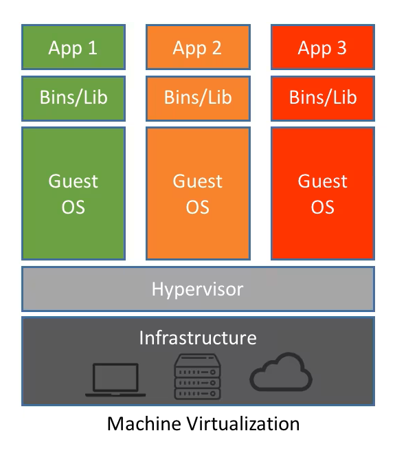
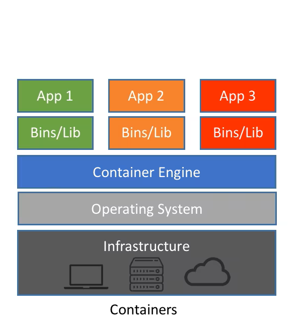
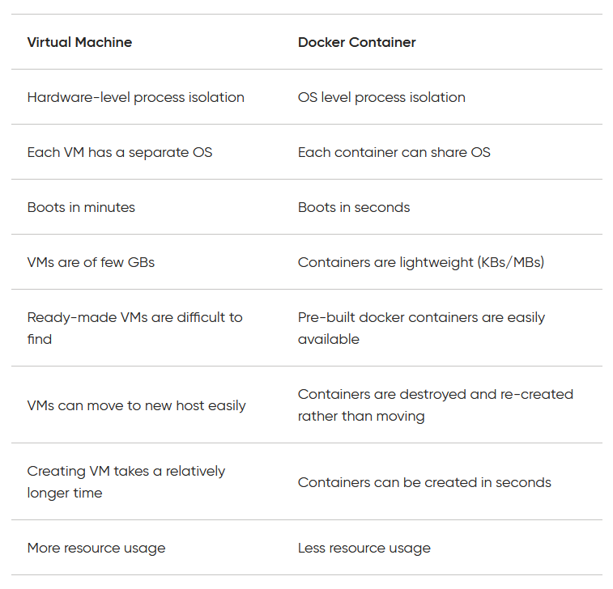
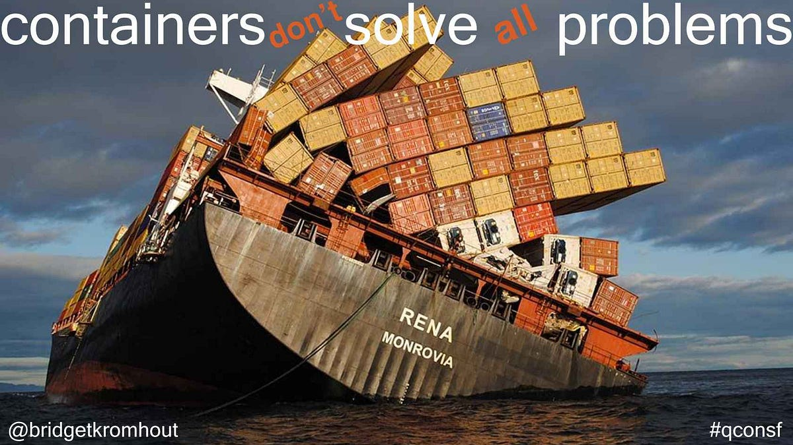
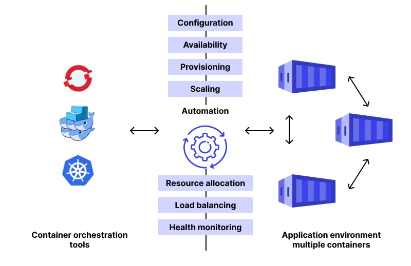
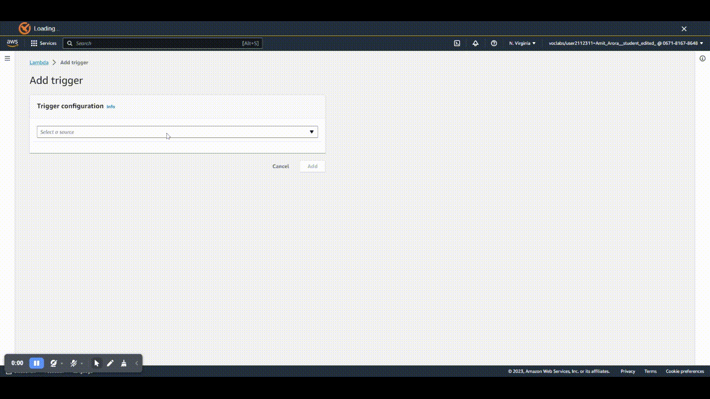

Lecture 4
Containers & Lambda
Georgetown University
Spring 2024
Agenda and Goals for Today
Lecture
- Docker containers
- Background and concepts
- Syntax and commands
- Examples
- Lambda/microservices
- Background and concepts
- Syntax and commands
- Examples
Lab
- Lambda service exploration
- Cloud9 Setup
- Docker Container exploration in Cloud9
Logistics and Review
Deadlines
Assignment 1: Python Skills Due Sept 5 11:59pmLab 2: Cloud Tooling Due Sept 5 6pmAssignment 2: Shell & Linux Due Sept 11 11:59pmLab 3: Parallel Computing Due Sept 12 6pm- Assignment 3: Parallelization Due Sept 18 11:59pm
- Lab 4: Docker and Lambda Due Sept 19 6pm
- Assignment 4: Containers Due Sept 25 11:59pm
- Lab 5: DuckDB & Polars Due Sept 26 6pm
Look back and ahead
- Continue to use Slack for questions!
- Parallelization in Python
- Concepts of
mapandreduce - Choosing when to re-factor/optimize code for scalability
- Questions on Assignment 3: Parallelization?
Containers
Process Isolation and Deployment
- Encapsulate all the dependencies of your code
- Deploy your code into production in the same environment as your development space
- Run your code without other processes affecting your work
- You need virtualization!
Motivation
Why should you care?

History of Virtualization
- Two types of virtualization - hardware and software
- Hardware time sharing started in the late 1950s
- Virtualization first introduced in IBM in the 1960s
- VMWare started in
Virtual Machines
- Hardware server is the host
- Multiple virtual machines can sit on the hypervisor as “guests”
- Pros: decades of development in VMs, multiple emulated full computers on single hardware, allows for infrastructure “lift and shift” to the cloud
- Cons: VM images very large (10-100s GBs), “guest” OS takes up resources, large start up cost

Containers
- Package and run applications in isolated environment
- Great for production work, not as much for developmental work
- Docker application manages “guest” applications with a single operating system
- Pros: Lightweight (10-100s MBs), faster spin up time, one host can manage many more containers
- Cons: containers must all work with the same OS, somewhat less secure due to shared OS resources, only 10 years old

Docker vs. Virtual Machine
Docker Container Architecture
- Images are a snapshot of instructions for setup of an application environment
- Containers are executing applications deployed based on an image
- Container images become containers at runtime (Docker Engine!)
Containers are not enough
Container lifecycle
- Containers (like applications) need a lifecycle
Container orchestration
Building Docker images
Docker layers
Each command to modify the environment is a layer in your build process

Docker base images
- The first command in a Docker build is to call
FROM XXXXX. This is the base image that has the core OS-level software. - smaller size == faster execution

The storage problem of containers
- When containers are killed, all temporary is lost! What to do…
- Containers need persistent storage sometimes
- Docker volumes live outside the container and allow for permanent storage
Dockerfile Syntax
Students explain what each command is doing
- Format is always
INSTRUCTION arguments FROM [--platform=<platform>] <image>[:<tag>] [AS <name>]- Pulling the base image to start withRUN <command>orRUN ["executable", "param1", "param2"]- Run commands of any typeVOLUME- Creates mountpoint for Docker volumeENV <key>=<value> ...- Set environment variables for your containerWORKDIR- Sets working directory for other commandsEXPOSE <port> [<port>/<protocol>...]- Open a port for the containerCOPY [--chown=<user>:<group>] [--chmod=<perms>] <src>... <dest>- Copies files from host file system to container file system. Note working directory matters in the container too!ADD- Copy with a link to allow for reusing of already built layers. Helps with build speed!
Dockerfile CMD and ENTRYPOINT
- Should have a purpose for your container and have it run something!
CMD command param1 param2- Final command to prepare the launching container. Typically occurs before anENTRYPOINTinstruction or as its own standalone command.CMDcan be overwritten by newdocker runarguments.ENTRYPOINT command param1 param2- Command that will run the Docker container as an executable, such as a web server, Jupter environment, or data pipeline.
Dockerfile Syntax Examples
RUN ["/bin/bash", "-c", "echo hello"]
FROM busybox
ENV FOO=/bar
WORKDIR ${FOO} # WORKDIR /bar
ADD . $FOO # ADD . /bar
COPY \$FOO /quux # COPY $FOO /quuS3 example
Web server example
Docker for Python jobs
Basic needs:
- Dockerfile that sets up environment
- Application code to execute
- List of packages to install
Docker Python example
- Write your Dockerfile
FROM python:3.8-slim-buster
WORKDIR /app
COPY requirements.txt requirements.txt
RUN pip3 install -r requirements.txt
COPY . .
CMD [ "python3", "-m" , "flask", "run", "--host=0.0.0.0"]Build the docker image using a tag and version number
docker build ./ -t docker-tag-name:1.0. Read about docker building options here.Check your docker images in your local file system using
docker imagesTest your docker image using
docker run -it docker-tag-name. Read about the flags here. Theiis to keep STDIN open, thetis for pseudo-TTY mode (shell).Deploy your docker image somewhere!
Docker links
Lambda
Overview
Lambda (or \(\lambda\)) is the name given to anonymous functions in some languages like Python.
Lambda is a powerful tool to build serverless microfunctions in a variety of programming languages that can be triggered in a variety of ways.
The execution of a Lambda can scale to meet the burst needs of users going to a website, or the number of rows of incoming data.
There can be thousands of executions happening simultaneously.
Lambda is billed by the millisecond (ms).
AWS Lambda Functions
Lambda Details

- Micro executions without dealing with any hardware, “serverless” computation.
- Can run many copies of code depending on number of requests or files.
- Supported languages: Java, Go, PowerShell, Node.js, C#, Python, and Ruby.
- Provides a Runtime API which allows you to use any additional programming languages to author your functions
- Pricing based on RAM and time used - Lambda pricing
- Max execution time - 15 minutes
- Max RAM - 10 GB
Lambda triggers
Lambdas only start executing in response to an event, such as an API being invoked, a schedule or more complex things.
A Lambda function is used primarily in the following two ways:
- Hosting an API, this is done in conjunction with an Amazon API Gateway.
- Running custom code to respond to events such as a new file showing up in an S3 bucket, a row being deleted from a database etc.

{kind=link}
Lambda triggersDifferent ways to invoke Lambda
 Source: Understanding the different ways to invoke Lambda function
Source: Understanding the different ways to invoke Lambda function
Some real world use-cases for a Lambda
Transforming a picture taken by a delivery agent into a desired format and storing it in S3 in real-time.
As a front-end (along with an API Gateway) to a ML model to provide real-time prediction to a customer clicking a link on a website .
A backend API that gets invoked when a QR code is scanned.
A simple single page website with a form.
Sending a scheduled newsletter to email addresses on a mailing list.
Lambda can be set on a schedule
- Similar to Linux Crontab or Windows Task Scheduler
- Site for translating crontab symbols to next execution: https://crontab.guru/
- Site for generating crontab syntax from dropdown options: https://crontab-generator.org/
Lambda coding choices
Levels of Lambda complexity:
- Code written directly on the AWS Lambda console
- Zip archive
- Docker Containers
Lambda basic code demo
Beyond any simple prototyping, you would probably never use this method.
The “hello world” example and then numbers with an endpoint
Using a Zip archive for Lambda
The Lambda code (say the
index.pyfile) and all the dependencies i.e. Python packages used by the code are packaged together in a Zip file, typically calledfunction.zip.- Be careful to always install these packages in a special directory specifically created for the Lambda function so to not override anything currently installed in your existing Python installation.
The
function.zipfile is put in an S3 bucket and the Lambda is configured to pull it from there.Example script for building a Lambda
function.zipand uploading it to S3.
Lambda with Docker containers
Dockerfile
# syntax=docker/dockerfile:1
# adapted from https://www.philschmid.de/aws-lambda-with-custom-docker-image
# https://docs.aws.amazon.com/lambda/latest/dg/python-image.html
FROM public.ecr.aws/lambda/python:3.9
# copy requirements file and install necessary packages
ADD requirements.txt ${LAMBDA_TASK_ROOT}
RUN pip3 install -r ${LAMBDA_TASK_ROOT}/requirements.txt --target "${LAMBDA_TASK_ROOT}"
# Copy function code to docker container
COPY app.py ${LAMBDA_TASK_ROOT}
# app (name of py file)
# handler (name of function to execute for lambda job)
CMD [ "app.lambda_handler" ]Interactivity with Lambda?
Connecting multiple Lambdas together
Performance optimization
warm start vs cold start
Extra links
https://www.tatvasoft.com/blog/aws-lambda-vs-azure-functions/
serverless web scraper with python and lambda - up to date simple example https://towardsdatascience.com/serverless-covid-19-data-scraper-with-python-and-aws-lambda-d6789a551b78